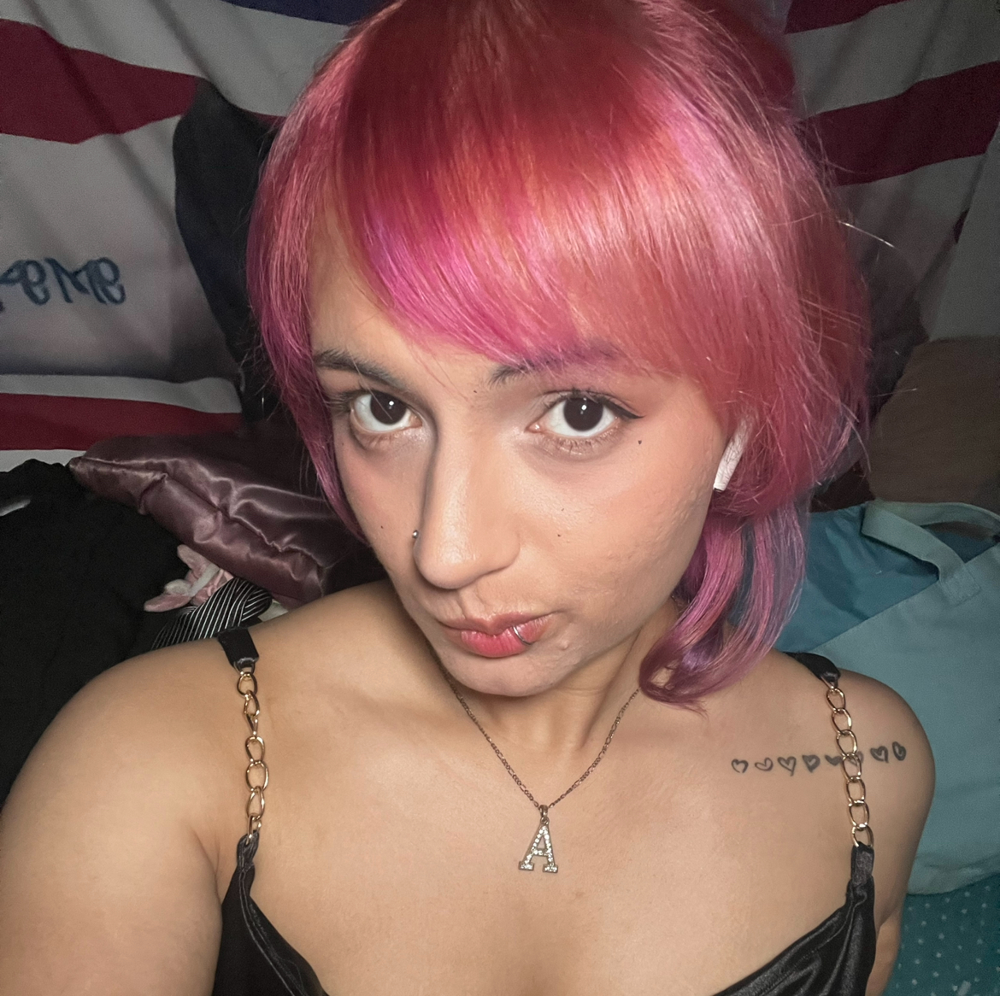

My name is Alyssa Torres and I'm really interested in a mix of different creative interest. I'm a
hobbiyist graphic designer mainly specializing in fan event designs and projects such
as cupsleeve events and banners! Aside from the cute and colorful designs I typically work on
fan events, I also really love dark, moody, and analog aesthetics. I would love to
eventually get into creating design pieces more closely related to that kind of
style. As I gain more experience in graphic design, I also really want to learn
new techniques and styles I probably never thought of before. My inspirations include,
but are not limited to, k-pop/j-pop , both maximilist and minimilist styles, video games,
and Y2K.